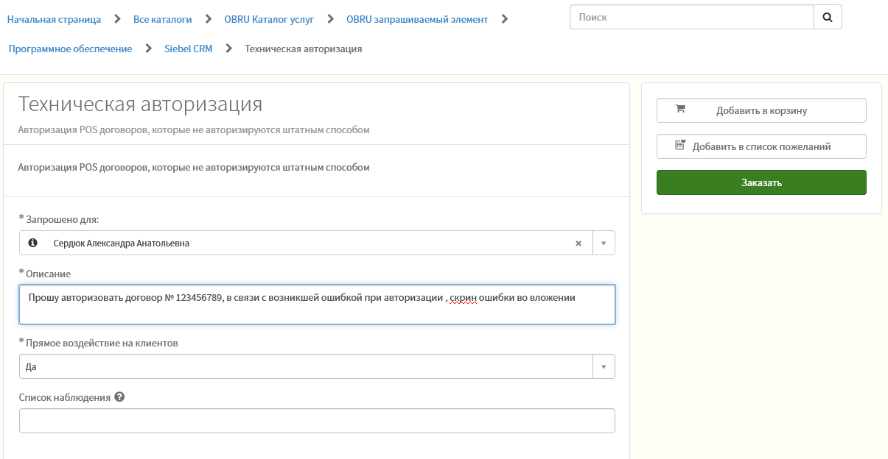

Проверка наличия документов
Обратите внимание, при выбранной сумме сделки, при покупке КАСКО за наличные, прикладывать полис необязательно, можно убрать его из пакета документов и выбрать в чек-листе «Нет КАСКО»
Проверка клиента
- Статья 33 Место совершения исполнительных действий и применения мер принудительного исполнения, без возможности определить предмет ИП и сумму
- Закрытый долг по статье 47 п.7 "Признание должника банкротом, направление исполнительного документа арбитражному управляющему".
- Арест имущества / Выселение / Арест счетов / Наложение ареста / КонфискацияКроме
Стоп-факторы при проверке на fssp.ru
Проверьте наличие залога у клиента и третьих лиц, по адресу www.reestr-zalogov.ru/search/.
При переходе на сайт кликните по информации о залогодателе и введите данные проверяемого лица.
Проверка Согласия об обработке персональных данных
Требования к фотографии Клиента
Скан паспорта
Скан дополнительного документа
В качестве дополнительного документа принимаются: Заграничный паспорт, ИНН, СНИЛС, Водительское удостоверение.
Договор купли-продажи (ДКП)
Информация в ДКП обязательно должна совпадать с данными из ПТСЭПТСИнформационного письма ДЦ / ТТН / ФУТС. Сверьте совпадение каждого пункта в ДКП и ПТС / СТС.
В случае обнаружения расхождений, отправьте договор на доработку с исправлением ошибок. Важно! Проверяйте инфо сразу и в ДКП и в акте приёма-передачи к нему!
Допустимо указание части данных в шапке ДКП и части — в конце договора — раздел с реквизитами сторон, при этом в конце договора должны быть указаны основные персональные данные.
В случае указания в ДКП / акте недостоверных данных транспортного средства или данных Клиента, сделка признается недействительной.
Оплата остатка стоимости ТС
На оплату остаточной стоимости автомобиля, а также дополнительных опций и продуктов, включенных в тело кредита, должны быть предоставлены счета.
В случае выявления ошибок направьте пакет документов на доработку в автосалон.
Полис КАСКО
Требуется обязательно при сумме кредита от 1 млн. рублей или при любой сумме, если полис покупается в кредит.
Паспорт транспортного средства
Договор комиссии / агентский договор
Договор считается предметным, если в нём однозначно определён автомобиль, например указан его VIN номер.
Внесение данных авто в Зибель
Данные вносятся на 5 шаге в окно товары. Важно! Данные вносятся строго согласно описанию!
Отправка письма на II этап верификации
тема письма:Фамилия И.О. заёмщика. Номер заявки
Для объединения и изменения формата файлов используем PDFCreator.
Выгрузка документов из Зибель
Сразу после отправки на второй этап, готовим ответное письмо в ДЦ с кредитными документами, для финального подписания сделки клиентом.
Файлы выгружаем по одному, кнопку РАСПЕЧАТАТЬ ДОКУМЕНТЫ не нажимаем до подтверждения верификатора, что сделка целесообразна. И проверки наличия и качества подписей клиента в документах.
Если договор не авторизовывается: создаем заявку в SN техническая авторизация
Если вы не в сети Банка:
- перейдите на рабочем пк по адресу: https://snow.otpbank.hu/otp
- нажмите ИТ-запросы.
- в меню слева выберите: Программное обеспечение → Siebel CRM
- нажмите карточку Техническая авторизация.
- нажмите кнопку ЗАКАЗАТЬ.
Далее требуется виза непосредственного руководителя, и заявка упадет на исполнение администраторам Sibel.

Отправка письма на оплату
тема письма:Документы на оплату. Фамилия И.О. заёмщика. Номер заявки
Во вложении — один архив zip / 7zip. В архиве — 2 PDF документа:
- PDF1: ИУ 4 страницы и заявление на перевод
- PDF2: Счета на оплату